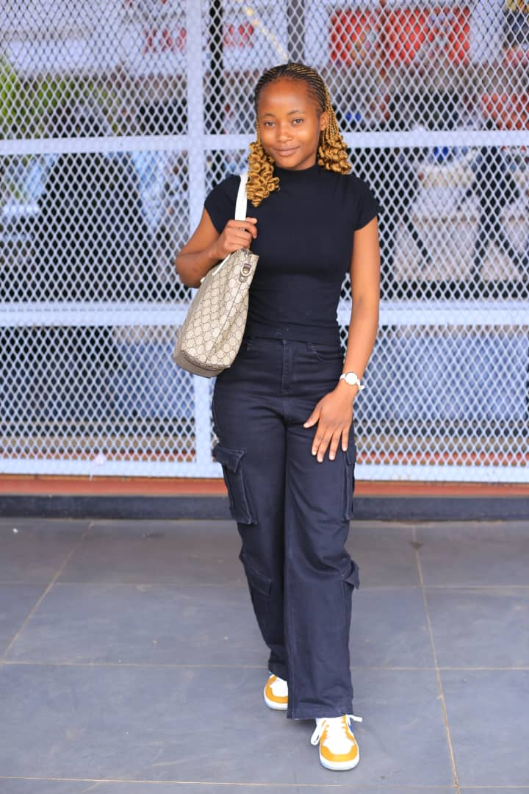

A propos de moi
Bonjour!je m'apppelle Mary Nkulu et je suis une étudiante dynamique et motivée en
informatique à l'UDBL. Passionnée par le developpement web, l'intelligence artificielle,
et le dising griphique,je suis constamment à la recherche de nouvelles opportunités
d'apprentissage et de défis stimulants
Au cours de mes études,j'ai developpée de solides compétences en programmation.
Je suis une personne rigoureuse,creative et j'aime travailler en équipe pour atteindre
des objectifs communs.Mon objectif est de contrubuer à des projets innovantes, trouver
un stage, et maitriser le Framework Laravel.
Mes competences
| CATEGORIE | COMPETENCES | NIVEAU |
|---|---|---|
| programmation | HTMLM,CSS,JavaScript,Python | Avancé |
| Design | Figma,Photoshop(bases) | Intermediaire |
| Langue | Français(natif),Anglais(fluide) | Avancé |
| Outils | Git,VS Code,Suite Office | Avancé |
| Soft Skils | Communication,Résolution de problèmes,Autonomie | Expert |